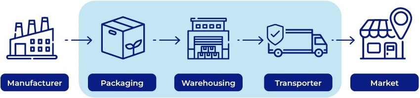
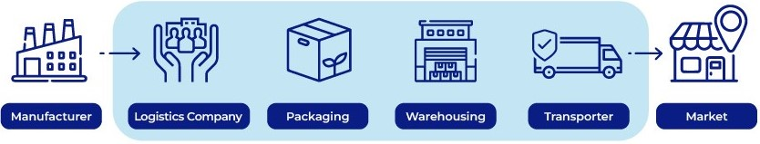
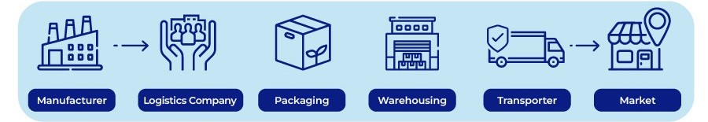

OPERACIONES LOGÍSTICAS
Contratar operadores logísticos es una práctica muy común cuando se busca la eficiencia a la hora de transportar mercancías, dada la complejidad de los procesos logísticos y el aumento del e-commerce. Ofrecemos asesoramiento y análisis personalizado sobre operaciones logísticas actuales e implementaciones.
¿QUÉ SON LOS OPERADORES LOGÍSTICOS?
Son empresas que funcionan como proveedores que asumen la responsabilidad de gestionar una o varias tareas de la cadena de suministro de una empresa contratante. El objetivo es que la empresa contratante pueda dedicar todos sus esfuerzos a su área de negocio, mientras que delega su área logística a un proveedor especializado.
De esta manera, la empresa contratante no tiene la necesidad de invertir recursos en desarrollar su propia plataforma logística, en adquirir una flota de transporte, o en entrenar a su personal en tareas logísticas. En cambio, le resulta más productivo subcontratar a operadores logísticos que ya posean la infraestructura, transporte y personal logístico, para que sean estos quienes se encarguen de la cadena de suministro de forma parcial o total.
TIPOS DE OPERADORES LOGÍSTICOS
Mientras mayor es el número detrás de “PL”, mayor es el grado de compromiso y participación de estos proveedores en todos los procesos de logística y distribución de una empresa.
1PL
En el caso particular de los operadores logísticos 1PL (first party logistics), estos no son propiamente proveedores, sino son las mismas empresas que deciden hacerse cargo de su propia logística terrestre, sin necesidad de subcontratar a un tercero. En este sentido, el operador logístico 1PL es la empresa que almacena y transporta directamente su propia mercancía de forma autónoma.
2PL
Los operadores logísticos 2PL (second party logistics) son los proveedores que se encargan de prestar los medios para el almacenamiento y el transporte de mercancías de las empresas contratantes.En este tipo de servicios, las empresas contratantes, al no contar con bodegas o flotas de transporte propias, deciden entonces contratar las bodegas y las flotas de los operadores logísticos 2PL. Sin embargo, la gestión logística de estos recursos se mantiene en las manos de las empresas contratantes, ya que los proveedores solo facilitan la utilización de sus recursos, sin asumir la responsabilidad de gestionarlos.

3PL
Los operadores logísticos 3PL (third party logistics) son proveedores que cuentan con bodegas y flotas de transporte propias, y que además asumen la responsabilidad de gestionar estos recursos como parte de los servicios de logística que les prestan a las empresas contratantes. De esta manera, los operadores logísticos 3PL se diferencian de los 2PL en el hecho de que se trata de un servicio más completo, que permite a las empresas contratantes delegar una gestión total de sus procesos de almacenamiento y transporte de mercancías. En este contexto, contar con todas las funcionalidades que una empresa necesita para mantener su negocio a flote, los contratos de soluciones logísticas 3PL normalmente son a largo plazo, tiempo durante el cual las empresas contratantes cumplen con mantener una supervisión periódica sobre sus 3PL.
4PL
Los operadores logísticos 4PL (fourth party logistics), también conocidos como proveedores líderes de logística o LLD (Lead Logistics Provider), son proveedores que asumen la gestión de toda la cadena de suministro de las empresas contratantes (más allá de solo el almacenamiento y el transporte). Sin embargo, este tipo de operadores logísticos no cuentan con activos propios, como bodegas o flotas, ya que su “gestión” se refiere solo a los procesos de planificación, coordinación, consultoría y supervisión de las cadenas de suministro. Entonces, para poder llevar a cabo las tareas físicas y prácticas de la logística, lo que hacen los 4PL es subcontratar a los operadores logísticos 3PL, quienes colocan a disposición de los 4PL toda la infraestructura logística necesaria, incluyendo personal y tecnologías.
5PL
Los operadores logísticos 5PL (fifth party logistics) son el último y más avanzado eslabón de la tercerización logística. Estos proveedores se caracterizan por tener la suficiente capacidad de gestionar múltiples cadenas de suministro a nivel mundial. En este sentido, las empresas contratantes no asumen ninguna responsabilidad de su logística, ya que delegan el 100% de sus cadenas de suministro a los 5PL. Para lograrlo, los 5PL se encargan de la gestión, la planificación y la toma de decisiones estratégicas a nivel macro sobre la logística de las cadenas de suministro bajo su control, desde los procesos de fabricación hasta los de logística inversa. Sin embargo, para el desarrollo operativo de estas tareas, los 5PL subcontratan a su vez a operadores logísticos 4PL y 3PL. Así, los proveedores 5PL son empresas que han de contar con una relación perfecta entre todas las operaciones que se deben ejecutar para llevar una logística completamente optimizada.
